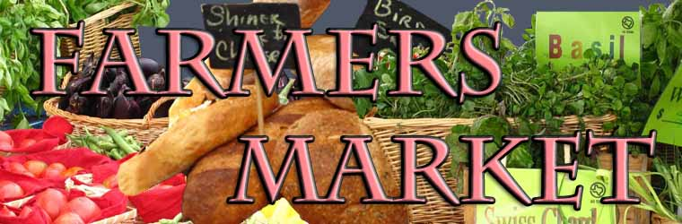
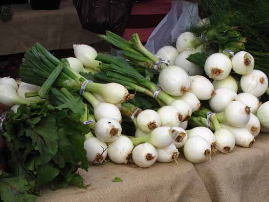
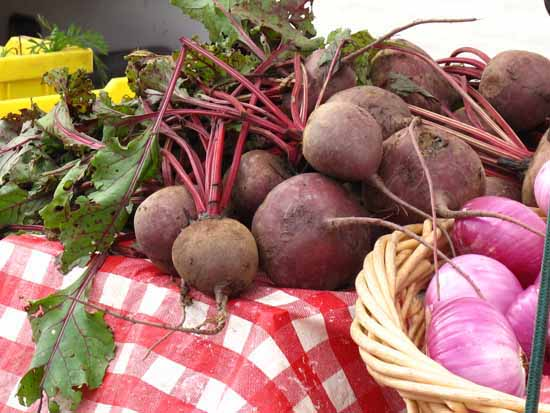

The Farmers Market is open every Saturday rain or shine from 9:00 a.m. until 1:00 p.m. All vendors come from within a 150 mile radius of the Market to sell their products.

Vendors include:
| Farm/Company Name | Product | |
|---|---|---|
| Glenn's Gourmet Nuts | San Antonio | gourmet nuts |
| King Farms | Seguin | seasonal produce & fresh eggs |
| Fruit Tree Orchards | San Marcos | figs, berries, apricots |
| D&G Farms | Blanco | fresh goat cheeses |
| Harrigan Farms | Stockdale | seasonal produce and fresh eggs |
| GWK Foods | Pleasanton | salsa, sprices, cornmeal, gluten-free mixes |
| Cheese House Foods | San Antonio | mascarpone & queso fresco |
| K&H Ranch | Floresville | grass-fed beef |
| Cathy's Garden | San Marcos | potted herbs |
| Ortiz Farms | Pleasanton | certified organic produce |
| Gonzales Farms | Hondo | lamb and goat |
| Chocolate Heaven | San Antonio | gourmet candy |
| Pine Hill Farms | Jourdanton | seasonal produce |
| Pecan Company | Poteet | pecans in shell & shelled pecans |
| Apple Blossom Farm | Carrizo Springs | certified organic tangerines & melons |
| SA Fresh Produce | Pleasanton | seasonal produce |
| The Fish Tank | Devine | farm raised tilapia & catfish |
| The Orchards | Floresville | peaches, pecans, baked goods |
| Martin Ranch | San Antonio | grass fed bison |
| The Baking Company | San Antonio | baked goods |
| Heritage Pork | Floresville | Heritage Pork |
| Watson Farms | Poteet | seasonal produce |
